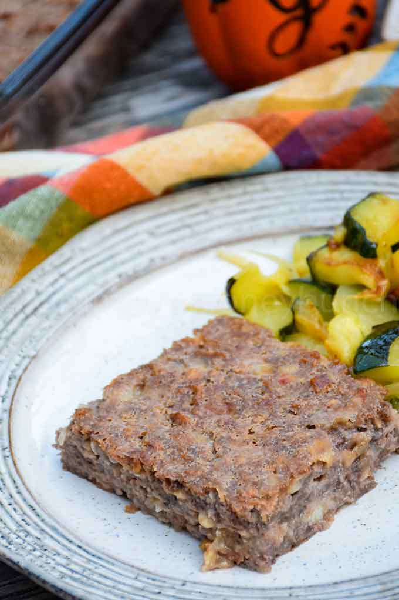

Home
Special-K Loaf

Description
A vegetarian loaf popular within select health-food-loving communites. The dish contains extensive amounts of cottage cheese and Special-K cereal. The flavour profile of the loaf is extremely savoury. The texture of an ideal loaf should be crispy on the outside and squishy on the inside.
Serve with assorted potluck delicaces, ideally heaped onto an overloaded and homogenous plated pile. If you can still see the plate beneath the pile, you haven't piled high enough.
Ingredients
- 5 Eggs, Beaten
- 1 large Onion, Diced and Sautéed
- 2 lbs Cottage Cheese
- 9 cups Special-K Cereal
- 4 tbsp Bragg's Liquid Aminos
- 1 cup Pecan Meal
- 1/4 cup Evaporated Milk
- 2 tbsp Marmite, Optional
Steps
- Preheat oven to 350 degrees. Spray 9 x 13 pan with non-stick spray and set aside.
- Beat 5 eggs in a large bowl.
- Sauté 1 large diced onion in butter until onions are translucent.
- In the meantime add 2 lbs cottage cheese, 9 cups Special K cereal, 4 tbsp Bragg’s Liquid Aminos, 1 cup pecan meal, and 1/4 cup evaporated milk to the beaten eggs. Add 2 tbsp Marmite if desired. Stir in onions when ready.
- Mix together well. Press firmly into the prepared pan.
- Bake for 45 minutes.